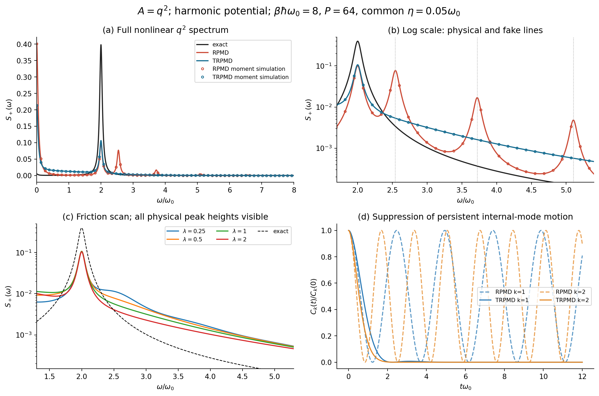
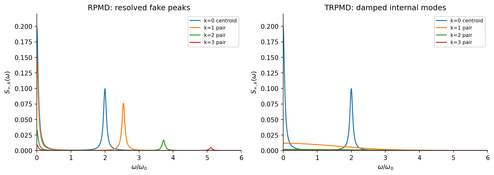
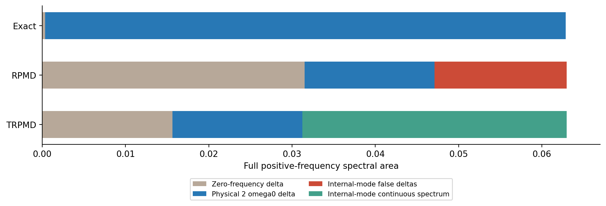
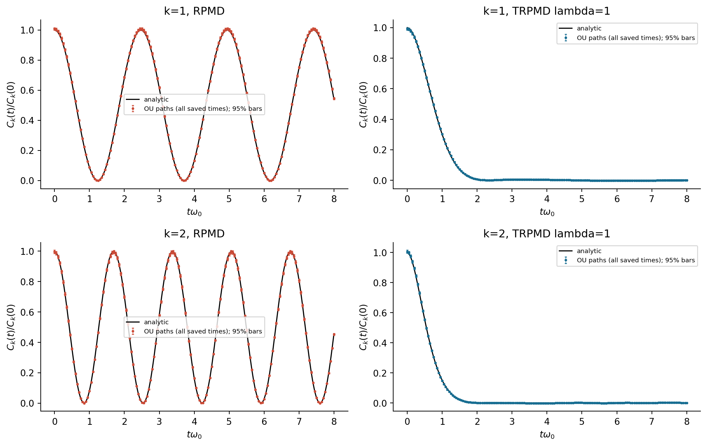
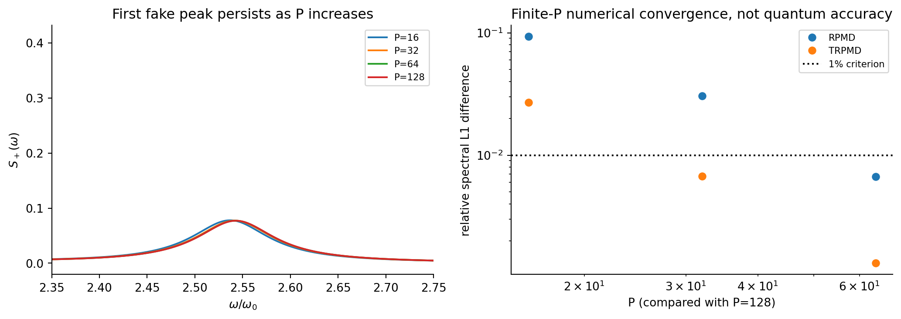

PIMD Series - Part VII
TRPMD and Spurious Spectral Lines
Part V obtained the exact harmonic position Kubo correlation from RPMD. Part VI examined stable propagation of its normal modes. Neither result guarantees an exact spectrum for a different observable. Here I keep the harmonic potential and measure position squared. This small change exposes analytically predictable false lines, a large zero-frequency contribution, and a physical line that is much too weak. TRPMD suppresses the sharp artifacts, while leaving a substantial error in the physical-line weight.
1. A harmonic potential with a nonlinear observable
The model and observable are
I use reduced units \(m=\hbar=\omega_0=1\) and inverse temperature \(\beta=8\). The dimensionless temperature parameter \(\beta\hbar\omega_0=8\) is the same as in Part V; the observable is now nonlinear. A quadratic polarizability term gives this type of Raman correlation, although no experimental optical prefactor is included here.
The comparison concerns the connected Kubo-transformed autocorrelation, with \(\delta A=A-\langle A\rangle\):
The nonlinear example in Ordered and Kubo Correlations derives the thermal weighting in detail. Here the necessary distinction is that \(C_K(0)\) is a Kubo static covariance, generally different from the ordinary quantum variance \(\langle(\delta A)^2\rangle\). In the ring-polymer approximation it is represented by the classical ensemble variance of the bead-averaged estimator.
For the linear observable \(q\), bead averaging retains only the centroid, and harmonic RPMD is exact. For \(q^2\), the bead average also reads the internal modes. This lets us separate a dynamical artifact from integration error without introducing an anharmonic potential.
2. Why exact has a double-frequency line and a zero-frequency term
Why the physical line is at \(2\omega_0\)
A simple trajectory already gives the frequency intuition:
Squaring a displacement makes the left and right turning points equivalent, so the signal repeats twice per period. The quantum selection rule gives the exact statement. Since
the nonzero off-diagonal matrix elements connect \(n\) and \(n\pm2\). Their energy difference is \(2\hbar\omega_0\). The Kubo transform changes transition weights, while the nonzero frequency remains \(2\omega_0\). Summing these matrix elements gives
Why the connected correlation still contains a constant
Each energy level has a different mean-square displacement:
A thermal ensemble includes different levels with different probabilities. Subtracting the overall mean removes the common offset, but leaves the differences between these level-dependent averages. In an isolated harmonic oscillator, the occupation number is conserved: a member initially above the ensemble average retains this part of its deviation, and a member below it remains below. Their initial and later deviations therefore have a nonzero product even at arbitrarily long times.
This persistent thermal memory produces the zero-frequency delta line. It is a static component, not an additional low-frequency vibration. A pure ground state has no occupation variance and no such diagonal connected contribution. Thermal fluctuations alone do not imply a delta at zero: persistence also requires the relevant quantity to remain conserved. Energy exchange with a physical environment can make this memory decay.
Why the plotted exact line has a finite width
The isolated oscillator has no physical linewidth. To display all methods with the same resolution, I use
The exponential observation window replaces a delta line by the Lorentz function
The half width at half maximum is \(\eta\). It is imposed resolution, not a predicted lifetime. The plotted signal at zero contains both the broadened genuine zero-frequency term and the small Lorentz tails of the double-frequency line. Letting \(\eta\to0^+\) recovers the ideal delta spectrum.
3. Predicting every RPMD false line
Using the normal-mode construction from Part I, write \(Q_k\) for an orthogonal real bead mode and define \(x_k=Q_k/\sqrt P\). The spring frequency and total harmonic frequency are
The subscript \(s\) distinguishes the auxiliary spring frequency from the actual frequency in the harmonic potential. The centroid has \(\omega_{s,0}=0\). The bead estimator and independent canonical initial conditions are
RPMD gives a Gaussian coordinate covariance proportional to \(\cos\Omega_kt\). Gaussian factorization then gives
Thus each independent real mode contributes a constant and a double-frequency oscillation of equal coefficient. Internal modes give false lines at \(2\Omega_k\); the pair \(k,P-k\) is degenerate and contributes twice the single-mode weight. These frequencies and weights are predictions of the RPMD equations, not fits to the spectrum.
The weights fall as \(\Omega_k^{-4}\): high-frequency coordinates have small variance, and their squared-coordinate correlation scales as the square of that variance. Meanwhile all constant contributions add at zero. The zero-frequency peak therefore includes every normal mode, not only the centroid.
4. What the TRPMD thermostat changes
TRPMD retains physical bead masses and thermostats the internal modes while leaving the centroid directly unthermostatted [1]. In the scaled coordinates used here,
The controllable parameter \(\lambda\) sets the friction scale. At fixed temperature, the noise strength follows the fluctuation-dissipation relation; changing friction without matching the noise would change the equilibrium distribution. This is a dynamics thermostat. The observation-window parameter \(\eta\) remains separate.
Define the normalized coordinate covariance \(f_k(t)\). It obeys
The formula uses the continuous critical-damping limit or its hyperbolic continuation when necessary. Larger friction is not a monotone route to higher accuracy: excessive friction produces overdamping and slow relaxation. The original work found a broad useful friction range, with \(\lambda\approx0.5\) favorable in its examples [1].
I choose \(\lambda=1\) as the main case because it makes the mechanism particularly transparent:
The squared signal has an oscillatory carrier at \(2\omega_0\) and an envelope decay rate \(2\omega_{s,k}\). Its complete spectrum also contains a zero-centered contribution and a sine contribution; its maximum need not lie at the carrier frequency. Here \(\lambda=1\) critically damps the free spring modes, not the total harmonic modes. A harmonic analysis of this frequency correction also appears in the formal TRPMD derivation [2].
There is no rule that transfers a selected fraction of a false peak to another normal mode. In this harmonic model the modes remain independent. Each mode's own covariance changes, its Fourier transform broadens, and the total spectrum sums these broadened contributions. The centroid receives no transferred internal-mode intensity.
5. Calculation and comparison protocol
| Quantity | Choice |
|---|---|
| Hamiltonian and observable | Harmonic oscillator; connected \(q^2\) Kubo correlation |
| Reduced units and temperature | \(m=\hbar=\omega_0=1\), \(\beta=8\) |
| Beads | Production \(P=64\); stricter check \(128\); diagnostics \(16,32\) |
| Friction | \(\lambda=1\) main; scans \(0.25,0.5,2\); \(0\) is RPMD |
| Spectral convention | Absolute \(S_+\), common \(\eta=0.05\), plotted frequencies \([0,8]\), spacing \(0.002\) |
| Numerical covariance propagation | DOP853 through \(t=400\); relative/absolute tolerances \(10^{-11}/10^{-13}\) |
| Saved correlation interval | \(0.01\), checked at \(0.005\) |
| Independent stochastic check | \(k=1,2\), \(\lambda=0,1\); \(0\leq t\leq8\), output interval \(0.05\) |
| Paths per stochastic case | 16 independent batches of 32768 single-mode paths; seed family 2026111701 |
Three calculations are kept distinct. The quantum reference uses analytic thermal sums and independent sums over 16, 32, and 64 oscillator levels. The full RPMD/TRPMD spectra are checked by numerically propagating the covariance equations, obtaining the fourth moment by Gaussian factorization, and performing a numerical cosine transform. Finally, actual random Ornstein-Uhlenbeck paths directly check the first two internal-mode correlations. Those single-mode checks are not a claim of full ring-polymer trajectory sampling.
The stochastic propagator uses the exact linear transition matrix and stationary noise covariance, so it has no finite-step Langevin integration bias. Every displayed stochastic time is retained. Fourier zero-padding evaluates the same finite-time transform more densely; it improves display interpolation, not physical resolution. All final continuous curves pass the declared finite-value, grid, residual, endpoint, and isolated-spike checks without smoothing the plotted data.
6. Spectra, mode decomposition, and validation





7. Reading the spectrum without confusing height, area, and frequency
Why RPMD has such a large zero-frequency peak
Every independent normal mode carries its own conserved energy in this harmonic RPMD model. A trajectory with a large mode amplitude has a larger time-averaged squared displacement, and retains that difference from the ensemble mean. Thus all the \(a_k\) constants accumulate at zero, while the oscillatory weights are spread across different frequencies. The zero-frequency coefficient is \(\sum_ka_k\), not merely the centroid contribution.
At this low temperature, exact occupation fluctuations are strongly suppressed because almost all thermal population is in the ground state. The classical auxiliary-mode energy fluctuations used by RPMD do not reproduce that small quantum diagonal variance. The resulting zero-frequency area is about 94 times the exact zero-frequency area. This is an error of the approximate real-time correlation, not numerical noise or the forgotten disconnected mean. Peak-height ratios additionally depend on broadening and overlapping tails.
Why only a few nonzero peaks are visible
The log-scale zoom in Figure 1 shows four nonzero lines: the physical centroid line and the first three internal pairs. The full interval up to \(8\omega_0\) also contains the weak line at \(6.55543\omega_0\). The next line is already at \(8.02847\omega_0\), outside the plotted range. For \(P=64\), degeneracy leaves 33 distinct nonzero-frequency positions, extending to about \(32.06\omega_0\). Higher lines remain present but are weak because their weights fall as \(\Omega_k^{-4}\).
What conserved spectral area actually means
No spectrum has been scaled to unit area or unit peak height. With the transform convention used here,
The Langevin thermostat preserves the same canonical ring-polymer distribution. Consequently the variance of \(A_P\), and therefore the full spectral area, is identical for RPMD and TRPMD. In this independent-mode model, each mode separately retains area \(2a_k\): RPMD divides it between a zero-frequency delta and a double-frequency delta, whereas TRPMD redistributes an internal mode's area into a continuous spectrum.
This is conservation of a static correlation measure. It is not conservation of the trajectory energy: the thermostat exchanges energy with its mode. Nor is it conservation of the area inside a truncated plotting window; some broadened weight can lie outside that window. Figure 3 compares all-frequency areas.
For the exact quantum system, the corresponding area is the Kubo covariance defined in Section 1. Calling it an ordinary quantum variance would be incorrect for this nonlinear observable. The ring-polymer variance is an estimator of that Kubo quantity as \(P\) is increased.
Why the physical peak is still about four times too small
In harmonic RPMD, only the centroid oscillates at \(\omega_0\), so only its squared-coordinate term gives a sharp line at \(2\omega_0\). Its weight is
At \(b=8\), the ratio is 0.249832. The internal beads help represent quantum equilibrium fluctuations, but RPMD propagates them at auxiliary frequencies. Their contribution therefore does not supplement the physical line as exact quantum dynamics requires. The area budget shows where the missing weight appears: too much at zero and at false nonzero lines.
Area normalization cannot fix the allocation. Exact places about 99.47% of its total area in the physical nonzero line; RPMD places about 24.80% there. Using the same observation window, the actual heights at \(2\omega_0\) are approximately 0.3982 for exact and 0.1004 for RPMD. Those heights include spectral tails, whereas \(a_0/A_2\) compares the unbroadened line coefficients.
What is smeared, and where the weight goes
The thermostat causes a mode to lose memory of its initial energy and phase. Both the constant and oscillating pieces of an internal squared-coordinate correlation therefore decay. Finite coherence time creates a frequency distribution of finite width. The distribution follows from \(2a_kf_k(t)^2\); no additional peak-allocation recipe is imposed.
At \(\lambda=1\), the internal oscillatory carriers move to \(2\omega_0\), but their envelopes decay. They produce broad weight rather than a new sharp physical line. The directly unthermostatted centroid retains its original delta-line coefficient. This explains why a spectrum can lose its false spikes without acquiring the correct quantum intensity. It also explains why eliminating an internal mode's permanent zero-frequency memory does not eliminate its total equilibrium fluctuation area.
8. Does increasing the bead number eventually make the spectrum exact?
It removes the imaginary-time discretization error, while leaving the chosen real-time approximation in place. For fixed mode index,
The low internal false-line frequencies and weights have finite limits. The centroid physical-line coefficient also remains unchanged. Thus bead convergence and quantum dynamical accuracy are separate tests; Figure 5 demonstrates the former while preserving a counterexample to the latter.
The formal connection to Matsubara dynamics identifies additional dynamical terms discarded in RPMD [3]. Keeping more Matsubara structure can improve particular correlations, but the smooth-mode approximation and complex phase sampling do not provide a universal exact-spectrum guarantee [4]. A Morse oscillator coupled to a harmonic bath has yielded nearly exact nonlinear correlations in favorable damping regimes, using an implementation with additional real-noise and tail approximations; it is a successful model calculation, not an arbitrary-system theorem [5].
Complete quantum propagation, or a formally exact real-time path-integral/phase-space representation, can in principle recover exact spectra when its other numerical and sampling limits are controlled. Those routes retain quantum structures that ordinary RPMD omits and can be expensive. Imaginary-time correlations followed by analytic continuation offer another route, but finite noisy data make the inversion ill-conditioned. There is no established general result that ordinary RPMD or its real Langevin-thermostatted version becomes exact for arbitrary observables solely because \(P\to\infty\).
9. Conclusions and scope
- The observable exposes the approximation. Harmonic RPMD is exact for the linear position correlation, while the nonlinear \(q^2\) spectrum reveals internal-mode false lines and an incorrect zero-frequency contribution.
- TRPMD controls coherence time while preserving equilibrium statistics. The internal thermostat suppresses narrow auxiliary lines and preserves their total area. In this model it does not transfer that area into the centroid's physical delta line.
- Removing visible artifacts is a partial repair. For the stated low-temperature test, the sharp physical line retains only about one quarter of the exact weight. Its missing intensity, residual zero-frequency term, and broad background remain material errors.
This benchmark isolates nonlinear-observable artifacts in a harmonic potential. In an anharmonic potential, internal fluctuations can also affect the centroid. Part VIII tests this with a one-dimensional quartic well and a linear position observable. Molecular spectral artifacts are discussed in the separate water TRPMD article. That coupling is absent here. The present analytic result establishes the mechanism and limits of this test; it does not constitute an anharmonic linear-IR reproduction or an optimal-friction rule for all systems.
Code and data
The standalone script uses NumPy, SciPy, and Matplotlib. It includes the frozen parameters, exact energy-level sum, analytic mode spectra, numerical covariance propagation, independent random-path checks, all five figures, and the curve-quality record. It does not require the ToyModel package.
python assets/code/pimd/trpmd_quadratic_spectrum.py --output trpmd-q2-output- trpmd_quadratic_spectrum.py: executable calculation and figure generation.
- spectra.csv: absolute exact, RPMD, and TRPMD spectra on the published frequency grid.
- mode_lines.csv: all distinct RPMD line positions, degeneracies, coefficients, and thermostat frictions.
- weight_budget.csv: the unbroadened all-frequency area categories in Figure 3; rows are exact, RPMD, and TRPMD.
References and related notes
- M. Rossi, M. Ceriotti, and D. E. Manolopoulos, How to remove the spurious resonances from ring polymer molecular dynamics, J. Chem. Phys. 140, 234116 (2014). DOI; arXiv.
- T. J. H. Hele, How to obtain thermostatted ring polymer molecular dynamics from exact quantum dynamics and when to use it. Author manuscript.
- T. J. H. Hele, M. J. Willatt, A. Muolo, and S. C. Althorpe, Relation of centroid molecular dynamics and ring-polymer molecular dynamics to exact quantum dynamics, J. Chem. Phys. 142, 191101 (2015). DOI.
- T. J. H. Hele, M. J. Willatt, A. Muolo, and S. C. Althorpe, Boltzmann-conserving classical dynamics in quantum time-correlation functions: Matsubara dynamics, J. Chem. Phys. 142, 134103 (2015). DOI.
- A. Prada, E. S. Pós, and S. C. Althorpe, Comparison of Matsubara dynamics with exact quantum dynamics for an oscillator coupled to a dissipative bath. Author manuscript.